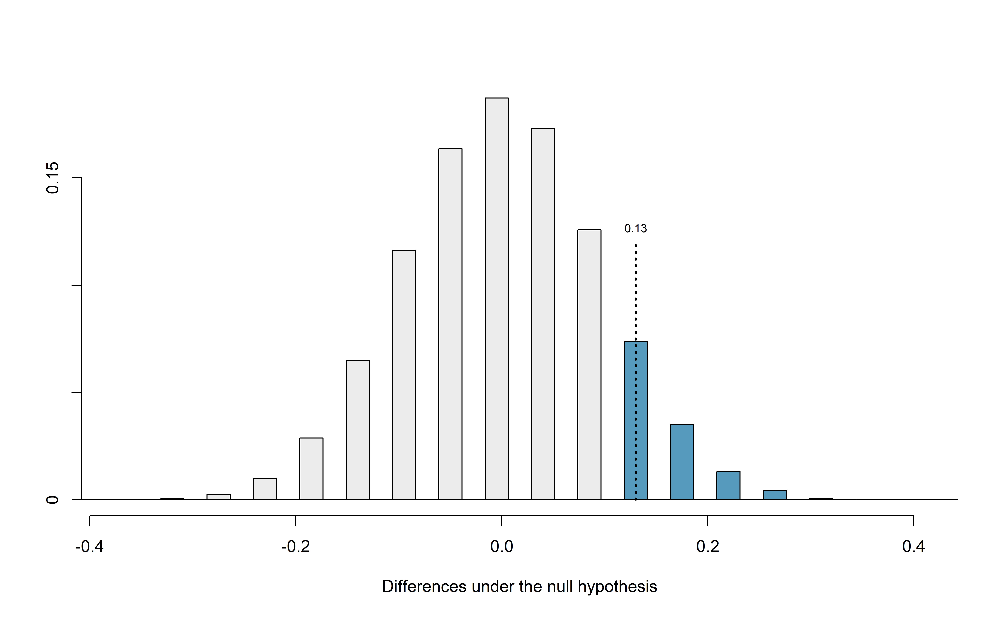
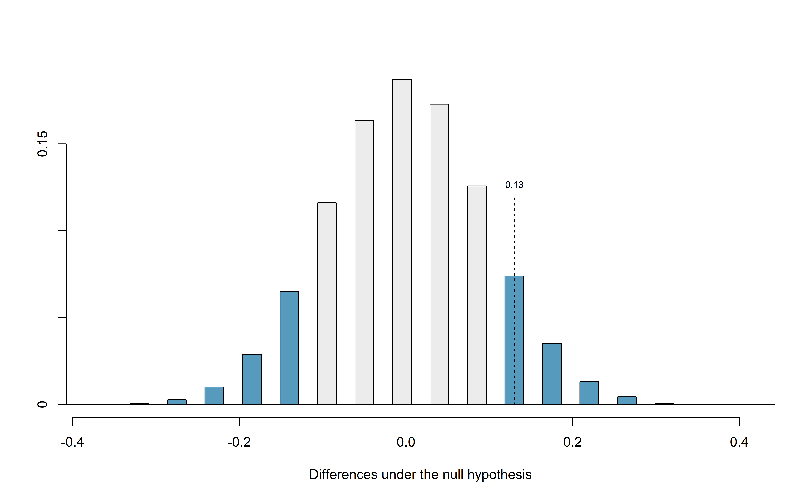
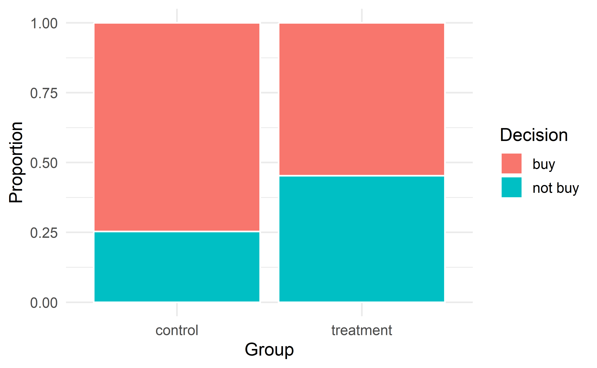
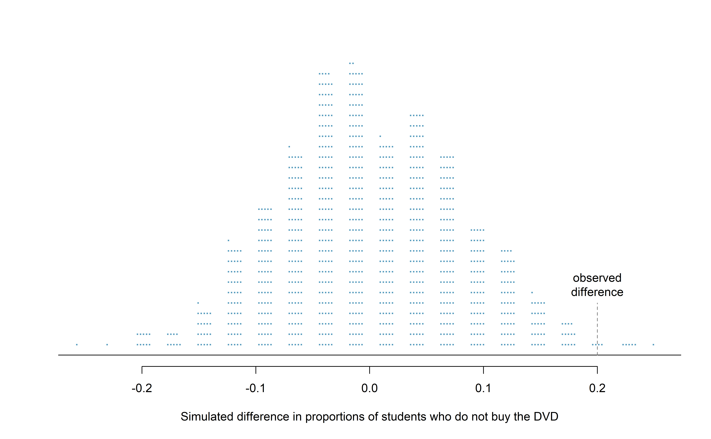
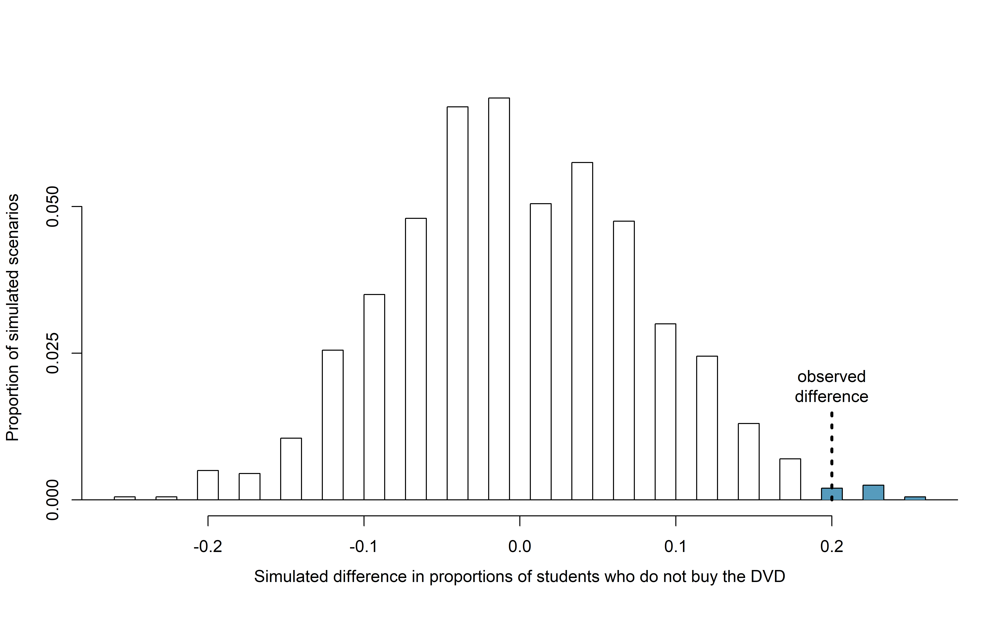
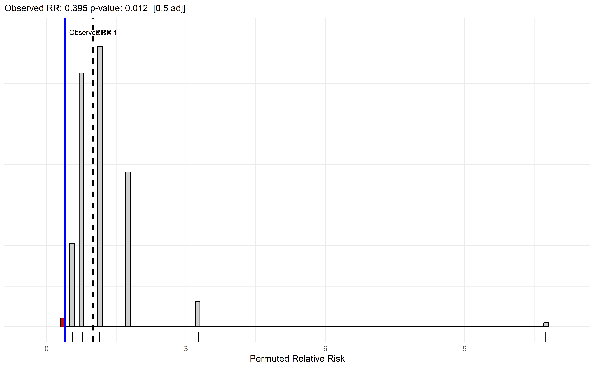
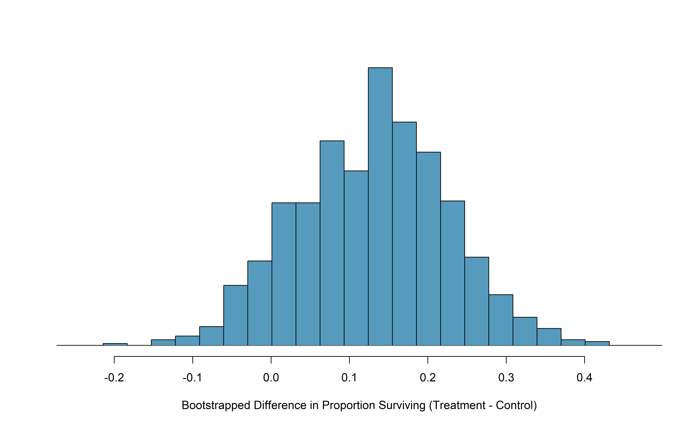
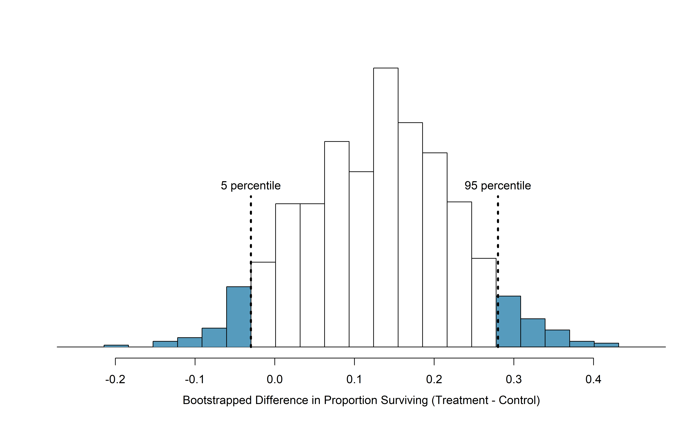
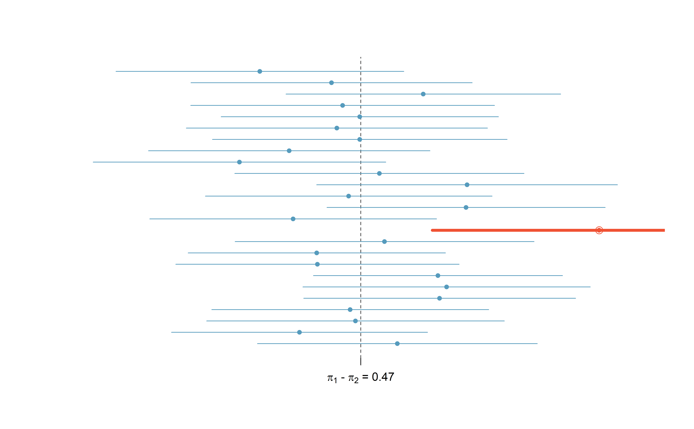
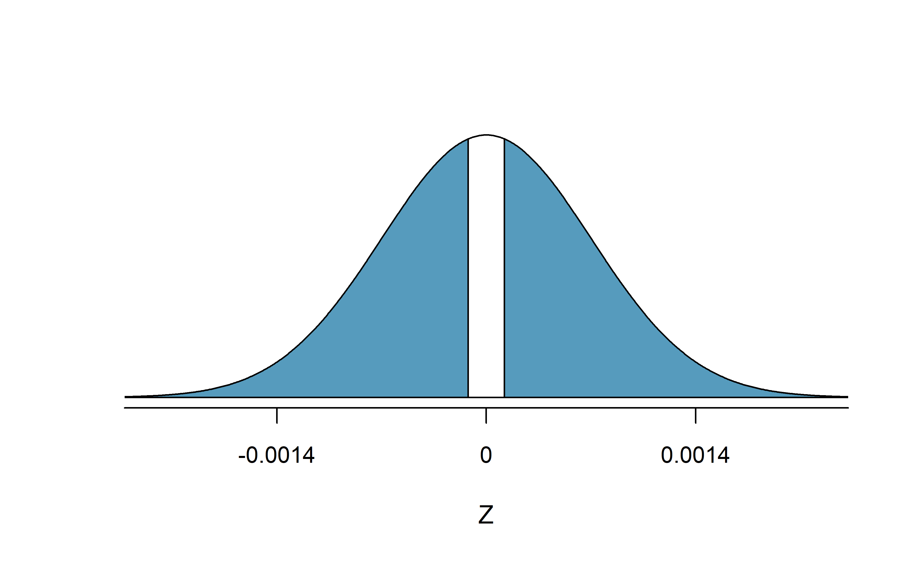

Chapter 15 Inference for comparing two proportions
We now extend the methods from Chapter 14 to apply confidence intervals and hypothesis tests to differences in population proportions that come from two groups, Group 1 and Group 2: \(\pi_1 - \pi_2.\)
In our investigations, we’ll identify a reasonable point estimate of \(\pi_1 - \pi_2\) based on the sample, and you may have already guessed its form: \(\hat{p}_1 - \hat{p}_2.\) Then we’ll look at the inferential analysis in two different ways: simulation-based methods of a randomization test and applying bootstrapping for interval estimates, and, if we verify that the point estimate can be modeled using a normal distribution, theory-based methods through a two sample \(z\)-test and \(z\)-interval.
Below we summarize the notation used throughout this chapter.
Notation for a binary explanatory variable and a binary response variable.
- \(n_1\), \(n_2\) = sample sizes of two independent samples
- \(\hat{p}_1\), \(\hat{p}_2\) = sample proportions of two independent samples
- \(\pi_1\), \(\pi_2\) = population proportions of two independent samples
15.1 Randomization test for \(H_0: \pi_1 - \pi_2 = 0\)
As you learned in Chapter 1, a randomized experiment is done to assess whether or not one variable (the explanatory variable) causes changes in a second variable (the response variable). Every data set has some variability in it, so to decide whether the variability in the data is due to (1) the causal mechanism (the randomized explanatory variable in the experiment) or instead (2) natural variability inherent to the data, we set up a sham randomized experiment as a comparison. That is, we assume that each observational unit would have gotten the exact same response value regardless of the treatment level. By reassigning the treatments many many times, we can compare the actual experiment to the sham experiment. If the actual experiment has more extreme results than any of the sham experiments, we are led to believe that it is the explanatory variable which is causing the result and not inherent data variability. We first observed this method in the Sex discrimination case study from Chapter 9. Now, using a few more studies, let’s look more carefully at this idea of a randomization test.
15.1.1 Case study: CPR and blood thinner
Cardiopulmonary resuscitation (CPR) is a procedure used on individuals suffering a heart attack when other emergency resources are unavailable. This procedure is helpful in providing some blood circulation to keep a person alive, but CPR chest compressions can also cause internal injuries. Internal bleeding and other injuries that can result from CPR complicate additional treatment efforts. For instance, blood thinners may be used to help release a clot that is causing the heart attack once a patient arrives in the hospital. However, blood thinners negatively affect internal injuries.
Here we consider an experiment with patients who underwent CPR for a heart attack and were subsequently admitted to a hospital.126 Each patient was randomly assigned to either receive a blood thinner (treatment group) or not receive a blood thinner (control group). The outcome variable of interest was whether the patient survived for at least 24 hours.
Form hypotheses for this study in plain and statistical language. Let \(\pi_c\) represent the true survival rate of people who do not receive a blood thinner (corresponding to the control group) and \(\pi_t\) represent the true survival rate for people receiving a blood thinner (corresponding to the treatment group).
We want to understand whether blood thinners are helpful or harmful. We’ll consider both of these possibilities using a two-sided hypothesis test.
\(H_0\): Blood thinners do not have an overall survival effect, i.e., \(\pi_t - \pi_c = 0\).
\(H_A\): Blood thinners have an impact on survival, either positive or negative, but not zero, i.e., \(\pi_t - \pi_c \neq 0\).
Note that if we had done a one-sided hypothesis test, the resulting hypotheses would have been:
\(H_0\): Blood thinners do not have a positive overall survival effect, i.e., \(\pi_t - \pi_c = 0\).
\(H_A\): Blood thinners have a positive impact on survival, i.e., \(\pi_t - \pi_c > 0\).
There were 50 patients in the experiment who did not receive a blood thinner and 40 patients who did. The study results are shown in Table 15.1.
| Treatment | Control | Total | |
|---|---|---|---|
| Survived | 14 | 11 | 25 |
| Died | 26 | 39 | 65 |
| Total | 40 | 50 | 90 |
What is the observed survival rate in the control group? And in the treatment group? Also, provide a point estimate of the difference in survival proportions of the two groups (\(\hat{p}_t - \hat{p}_c\)) and the relative “risk” of survival (\(\hat{p}_t/\hat{p}_c\)).127
According to the point estimate, for patients who have undergone CPR outside of the hospital, an additional 13% of these patients survive when they are treated with blood thinners. Interpreting the relative risk, patients in this sample who had undergone CPR outside of the hospital had a 59% higher survival rate when they were treated with blood thinners. However, we wonder if this difference could be easily explainable by chance.
As we did in our past studies this chapter, we will simulate what type of differences we might see from chance alone under the null hypothesis. By randomly assigning “simulated treatment” and “simulated control” stickers to the patients’ files, we get a new grouping. If we repeat this simulation 10,000 times, we can build a null distribution of the differences in sample proportions shown in Figure 15.1.

Figure 15.1: Null distribution of the point estimate for the difference in proportions, \(\hat{p}_t - \hat{p}_c\). The shaded right tail shows observations that are at least as large as the observed difference, 0.13.
The right tail area is 0.131.128 However, contrary to how we calculated the p-value in previous studies, the p-value of this test is not 0.131!
The p-value is defined as the chance we observe a result at least as favorable to the alternative hypothesis as the result (i.e., the difference) we observe. In this case, any differences less than or equal to \(-0.13\) would also provide equally strong evidence favoring the alternative hypothesis as a difference of \(+0.13\) did. A difference of \(-0.13\) would correspond to the survival rate in the control group being 0.13 higher than the treatment group.129 In Figure 15.2 we’ve also shaded these differences in the left tail of the distribution. These two shaded tails provide a visual representation of the p-value for a two-sided test.

Figure 15.2: Null distribution of the point estimate for the difference in proportions, \(\hat{p}_t - \hat{p}_c\). All values that are at least as extreme as +0.13 but in either direction away from 0 are shaded.
For a two-sided test, since the null distribution is symmetric, take the single tail (in this case, 0.131) and double it to get the p-value: 0.262. With this large p-value, we do not find statistically significant evidence that the blood thinner has any influence on survival of patients who undergo CPR prior to arriving at the hospital.
15.1.2 Case study: Opportunity cost
How rational and consistent is the behavior of the typical American college student? In this section, we’ll explore whether college student consumers always consider the following: money not spent now can be spent later.
In particular, we are interested in whether reminding students about this well-known fact about money causes them to be a little thriftier. A skeptic might think that such a reminder would have no impact. We can summarize the two different perspectives using the null and alternative hypothesis framework.
\(H_0\): Null hypothesis. Reminding students that they can save money for later purchases will not have any impact on students’ spending decisions.
\(H_A\): Alternative hypothesis. Reminding students that they can save money for later purchases will reduce the chance they will continue with a purchase.
How could you design a randomized experiment to test these two hypotheses?130
In statistical notation, we can define parameters \(\pi_{ctrl}\) = the probability a student under a control condition (not reminding them that they can save money for later purchases) refrains from making a purchase, and \(\pi_{trmt}\) = the probability a student under a treatment condition (reminding them that they can save money for later purchases) refrains from makes a purchase. Our hypotheses are then
\(H_0: \pi_{trmt} - \pi_{ctrl} = 0\)
\(H_A: \pi_{trmt} - \pi_{ctrl} > 0\)
In this section, we’ll explore an experiment conducted by researchers that investigates this very question for students at a university in the southwestern United States.131
One-hundred and fifty students were recruited for the study, and each was given the following statement:
Imagine that you have been saving some extra money on the side to make some purchases, and on your most recent visit to the video store you come across a special sale on a new video. This video is one with your favorite actor or actress, and your favorite type of movie (such as a comedy, drama, thriller, etc.). This particular video that you are considering is one you have been thinking about buying for a long time. It is available for a special sale price of $14.99.
What would you do in this situation? Please circle one of the options below.
Half of the 150 students were randomized into a control group and were given the following two options:
- Buy this entertaining video.
- Not buy this entertaining video.
The remaining 75 students were placed in the treatment group, and they saw a slightly modified option (B):
- Buy this entertaining video.
- Not buy this entertaining video. Keep the $14.99 for other purchases.
Would the extra statement reminding students of an obvious fact impact the purchasing decision? Table 15.3 summarizes the study results.
| control group | treatment group | Total | |
|---|---|---|---|
| buy DVD | 56 | 41 | 97 |
| not buy DVD | 19 | 34 | 53 |
| Total | 75 | 75 | 150 |
It might be a little easier to review the results using row proportions, specifically considering the proportion of participants in each group who said they would buy or not buy the DVD. These summaries are given in Table 15.5, and a segmented bar plot is provided in Figure 15.3.
| control group | treatment group | Total | |
|---|---|---|---|
| buy DVD | 0.747 | 0.547 | 0.647 |
| not buy DVD | 0.253 | 0.453 | 0.353 |
| Total | 1.00 | 1.00 | 1.00 |

Figure 15.3: Segmented bar plot comparing the proportion who bought and did not buy the DVD between the control and treatment groups.
We will define a success in this study as a student who chooses not to buy the DVD.132 Then, the value of interest is the change in DVD purchase rates that results by reminding students that not spending money now means they can spend the money later.
We can construct a point estimate for this difference as \[\begin{align*} \hat{p}_{trmt} - \hat{p}_{ctrl} = \frac{34}{75} - \frac{19}{75} = 0.453 - 0.253 = 0.200 \end{align*}\] The proportion of students who chose not to buy the DVD was 20% higher in the treatment group than the control group. However, is this result statistically significant? In other words, is a 20% difference between the two groups so prominent that it is unlikely to have occurred from chance alone?
The primary goal in this data analysis is to understand what sort of differences we might see if the null hypothesis were true, i.e., the treatment had no effect on students. For this, we’ll use the same procedure we applied in Section 9.2: randomization.
Let’s think about the data in the context of the hypotheses. If the null hypothesis (\(H_0\)) was true and the treatment had no impact on student decisions, then the observed difference between the two groups of 20% could be attributed entirely to chance. If, on the other hand, the alternative hypothesis (\(H_A\)) is true, then the difference indicates that reminding students about saving for later purchases actually impacts their buying decisions.
Just like with the gender discrimination study, we can perform a statistical analysis. Using the same randomization technique from the last section, let’s see what happens when we simulate the experiment under the scenario where there is no effect from the treatment.
While we would in reality do this simulation on a computer, it might be useful to think about how we would go about carrying out the simulation without a computer. We start with 150 index cards and label each card to indicate the distribution of our response variable: decision. That is, 53 cards will be labeled “not buy DVD” to represent the 53 students who opted not to buy, and 97 will be labeled “buy DVD” for the other 97 students. Then we shuffle these cards thoroughly and divide them into two stacks of size 75, representing the simulated treatment and control groups. Any observed difference between the proportions of “not buy DVD” cards (what we earlier defined as success) can be attributed entirely to chance.
If we are randomly assigning the cards into the simulated treatment and control groups, how many “not buy DVD” cards would we expect to end up with in each simulated group? What would be the expected difference between the proportions of “not buy DVD” cards in each group?
Since the simulated groups are of equal size, we would expect \(53 / 2 = 26.5\), i.e., 26 or 27, “not buy DVD” cards in each simulated group, yielding a simulated point estimate of 0% . However, due to random fluctuations, we might actually observe a number a little above or below 26 and 27.
The results of a single randomization from chance alone is shown in Table 15.7. From this table, we can compute a difference that occurred from chance alone: \[\begin{align*} \hat{p}_{trmt, simulated} - \hat{p}_{ctrl, simulated} = \frac{24}{75} - \frac{29}{75} = 0.32 - 0.387 = - 0.067 \end{align*}\]
| control group | treatment group | Total | |
|---|---|---|---|
| buy DVD | 46 | 51 | 97 |
| not buy DVD | 29 | 24 | 53 |
| Total | 75 | 75 | 150 |
Just one simulation will not be enough to get a sense of what sorts of differences would happen from chance alone. We’ll simulate another set of simulated groups and compute the new difference: 0.013. And again: 0.067. And again: -0.173. We’ll do this 1,000 times. The results are summarized in a dot plot in Figure 15.4, where each point represents a simulation. Since there are so many points, it is more convenient to summarize the results in a histogram such as the one in Figure 15.5, where the height of each histogram bar represents the fraction of observations in that group.

Figure 15.4: A stacked dot plot of 1,000 chance differences produced under the null hypothesis, \(H_0\). Six of the 1,000 simulations had a difference of at least 20% , which was the difference observed in the study.

Figure 15.5: A histogram of 1,000 chance differences produced under the null hypothesis, \(H_0\). Histograms like this one are a more convenient representation of data or results when there are a large number of observations.
If there was no treatment effect, then we’d only observe a difference of at least +20% about 0.6% of the time, or about 1-in-150 times. That is really rare! Instead, we will conclude the data provide strong evidence there is a treatment effect: reminding students before a purchase that they could instead spend the money later on something else lowers the chance that they will continue with the purchase. Notice that we are able to make a causal statement for this study since the study is an experiment.
Since the study was a randomized experiment, we can conclude that the effect was due to the reminder about saving money for other purchases—the reminder caused the lower rate of purchase. However, since this study used a volunteer sample (students were “recruited”), we can only generalize this result to individuals similar to those in the study. Thus, we have evidence that reminding students that they can save money for later purchases will reduce the chance they will continue with a purchase, but only among students are similar to those in the study.
15.1.3 Case study: Malaria vaccine
We consider a study on a new malaria vaccine called PfSPZ. In this study, volunteer patients were randomized into one of two experiment groups: 14 patients received an experimental vaccine and 6 patients received a placebo vaccine. Nineteen weeks later, all 20 patients were exposed to a drug-sensitive malaria virus strain; the motivation of using a drug-sensitive strain of virus here is for ethical considerations, allowing any infections to be treated effectively. The results are summarized in Table 15.9, where 9 of the 14 treatment patients remained free of signs of infection while all of the 6 patients in the control group patients showed some baseline signs of infection.
| vaccine | placebo | Total | ||
|---|---|---|---|---|
| infection | 5 | 6 | 11 | |
| no infection | 9 | 0 | 9 | |
| Total | 14 | 6 | 20 |
Is this an observational study or an experiment? What implications does the study type have on what can be inferred from the results?133
In this study, a smaller proportion of patients who received the vaccine showed signs of an infection (35.7% versus 100%). However, the sample is very small, and it is unclear whether the difference provides convincing evidence that the vaccine is effective. To determine this, we need to perform statistical inference.
Instead of using the difference in proportion infected as our summary measure, let’s use the relative risk of infection for this case study. Thus, the parameter of interest is \(\pi_{Vac} / \pi_{Pla}\), and our point estimate of this parameter is
\[ \frac{\hat{p}_{Vac}}{\hat{p}_{Pla}} = \frac{5/14}{6/6} = 0.357. \]
Converting this to a percent decrease134, we see that the patients in the vaccine group had a 64.3% reduced risk of infection compared to the placebo group.135
In terms of relative risk, our null and alternative hypotheses are
Independence model \(H_0: \dfrac{\pi_{Vac}}{\pi_{Pla}} = 1\)
Alternative model \(H_A: \dfrac{\pi_{Vac}}{\pi_{Pla}} < 1\)
Whether we write our hypotheses in terms of a difference in proportions or a ratio of proportions (relative risk), the hypotheses still have the same interpretation. For example, the three null hypotheses \(H_0: \pi_{Vac} = \pi_{Pla}\), \(H_0: \pi_{Vac} - \pi_{Pla} = 0\), and \(H_0: \pi_{Vac}/\pi_{Pla} = 1\), are all algebraically equivalent.
What would it mean if the independence model, which says the vaccine had no influence on the rate of infection, is true? It would mean 11 patients were going to develop an infection no matter which group they were randomized into, and 9 patients would not develop an infection no matter which group they were randomized into. That is, if the vaccine did not affect the rate of infection, the difference in the infection rates was due to chance alone in how the patients were randomized.
Now consider the alternative model: infection rates were influenced by whether a patient received the vaccine or not. If this was true, and especially if this influence was substantial, we would expect to see some difference in the infection rates of patients in the groups.
We choose between these two competing claims by assessing if the data conflict so much with \(H_0\) that the independence model cannot be deemed reasonable. If this is the case, and the data support \(H_A\), then we will reject the notion of independence and conclude the vaccine is effective.
We’re going to implement simulation, where we will pretend we know that the malaria vaccine being tested does work. Ultimately, we want to understand if the large difference we observed is common in these simulations. If it is common, then maybe the difference we observed was purely due to chance. If it is very uncommon, then the possibility that the vaccine was helpful seems more plausible.
We can again randomize the responses (infection or no infection) to the treatment conditions under the null hypothesis of independence, but this time, we’ll compute sample relative risks with each simulated sample.
How could you use cards to re-randomize one sample into groups? Remember, in this hypothetical world, we believe each patient that got an infection was going to get it regardless of which group they were in, and we would like to see what happens if we randomly assign these patients to the treatment and control groups again.136
Figure 15.6 shows a histogram of the relative risks found from 1,000 randomization simulations, where each value represents a simulated relative risk of infection (treatment rate divided by control rate) assuming the relative risk is 1.

Figure 15.6: A histogram of relative risks of infection from 1,000 simulations produced under the independence model \(H_0\), where in these simulations infections are unaffected by the vaccine. Twelve of the 1,000 simulations (shaded in red) had a relative risk of at most 0.395, the adjusted relative risk observed in the study.
The distribution of simulated relative risks is not symmetric, but will have a median around one. We simulated the relative risks assuming that the independence (of observations relative to group) model was true, and under this condition, we expect the difference to be near one with some random fluctuation, where near is pretty generous in this case since the sample sizes are so small in this study.
How often would you observe a sample relative risk of at most 0.357 (at least a 64.3% reduction in risk on vaccine) according to Figure 15.6? Often, sometimes, rarely, or never?
It appears that a 64.3% reduction in risk due to chance alone would only happen about 2% of the time according to Figure 15.6. Such a low probability indicates a rare event.
Based on the simulations, we have two options:
We conclude that the study results do not provide strong evidence against the independence model. That is, we do not have sufficiently strong evidence to conclude the vaccine had an effect in this clinical setting.
We conclude the evidence is sufficiently strong to reject \(H_0\) and assert that the vaccine was useful. When we conduct formal studies, usually we reject the notion that we just happened to observe a rare event.137
In this case, we reject the independence model in favor of the alternative. That is, we are concluding the data provide strong evidence that the vaccine provides some protection against malaria in this clinical setting.
Statistical inference is built on evaluating whether such differences are due to chance. In statistical inference, data scientists evaluate which model is most reasonable given the data. Errors do occur, just like rare events, and we might choose the wrong model. While we do not always choose correctly, statistical inference gives us tools to control and evaluate how often these errors occur.
15.2 Bootstrap confidence interval for \(\pi_1 - \pi_2\)
In Section 15.1, we worked with the randomization distribution to understand the distribution of \(\hat{p}_1 - \hat{p}_2\) when the null hypothesis \(H_0: \pi_1 - \pi_2 = 0\) is true. Now, through bootstrapping, we study the variability of \(\hat{p}_1 - \hat{p}_2\) without the null assumption.
15.2.1 Observed data
Reconsider the CPR data from Section 15.1 which is provided in Table 15.1. The experiment consisted of two treatments on patients who underwent CPR for a heart attack and were subsequently admitted to a hospital. Each patient was randomly assigned to either receive a blood thinner (treatment group) or not receive a blood thinner (control group). The outcome variable of interest was whether the patient survived for at least 24 hours.
Again, we use the difference in sample proportions as the observed statistic of interest. Here, the value of the statistic is: \(\hat{p}_t - \hat{p}_c = 0.35 - 0.22 = 0.13\).
15.2.2 Variability of the statistic
The bootstrap method applied to two samples is an extension of the method described in Section 14.2. Now, we have two samples, so each sample estimates the population from which they came. In the CPR setting, the treatment sample estimates the population of all individuals who have gotten (or will get) the treatment; the control sample estimate the population of all individuals who do not get the treatment and are controls. Figure 15.7 extends Figure 10.1 to show the bootstrapping process from two samples simultaneously.

Figure 15.7: Creating two estimated populations from two different samples from different populations.
As before, once the population is estimated, we can randomly resample observations to create bootstrap samples, as seen in Figure 15.8. Computationally, each bootstrap resample is created by randomly sampling with replacement from the original sample.

Figure 15.8: Bootstrapped resamples from two separate estimated populations.
The variability of the statistic (the difference in sample proportions) can be calculated by taking one treatment bootstrap sample and one control bootstrap sample and calculating the difference of the bootstrap survival proportions. Figure 15.9 displays one bootstrap resample from each of the estimated populations, with the difference in sample proportions calculated between the treatment bootstrap sample and the control bootstrap sample.

Figure 15.9: The bootstrap resample on the left is from the first estimated population; the one on the right from the second. In this case, the value of the simulated bootstrap statistic would be \(\hat{p}_1 - \hat{p}_2 = \frac{2}{7}-\frac{1}{7}\).
As always, the variability of the difference in proportions can only be estimated by repeated simulations, in this case, repeated bootstrap samples. Figure 15.10 shows multiple bootstrap differences calculated for each of the repeated bootstrap samples.

Figure 15.10: For each pair of bootstrap samples, we calculate the difference in sample proportions.
Repeated bootstrap simulations lead to a bootstrap sampling distribution of the statistic of interest, here the difference in sample proportions. Figure 15.11 visualizes the process in the toy example, and Figure 15.12 shows 1000 bootstrap differences in proportions for the CPR data. Note that the CPR data includes 40 and 50 people in the respective groups, and the toy example includes 7 and 9 people in the two groups. Accordingly, the variability in the distribution of sample proportions is higher for the toy example. It turns out that the standard error for the sample difference in proportions is inversely related to the sample sizes.

Figure 15.11: The process of repeatedly resampling from the estimated population (sampling with replacement from the original sample), computing a difference in sample proportions from each pair of samples, then plotting this distribution.

Figure 15.12: A histogram of differences in proportions (treatment \(-\) control) from 1000 bootstrap simulations using the CPR data.
Figure 15.12 provides an estimate for the variability of the difference in survival proportions from sample to sample. As in Section 14.2, the bootstrap confidence interval can be calculated directly from the bootstrapped differences in Figure 15.12 by finding the percentiles of the distribution that correspond to the confidence level. For example, here we calculate the 90% confidence interval by finding the 5th and 95th percentile values from the bootstrapped differences. The bootstrap 5th percentile proportion is -0.03 and the 95th percentile is 0.28. The result is: we are 90% confident that, in the population, the true difference in probability of survival (treatment \(-\) control) is between -0.03 and 0.28. More clearly, we are 90% confident that the probability of survival for heart attack patients who underwent CPR on blood thinners is between 0.03 less to 0.28 more than that for patients who were not given blood thinners. The interval shows that we do not have much definitive evidence of the affect of blood thinners, one way or another.

Figure 15.13: The CPR data are bootstrapped 1000 times. Each simulation creates a sample from the original data where the proportion who survived in the treatment group is \(\hat{p}_{t} = 14/40\) and the proportion who survived in the control group is \(\hat{p}_{c} = 11/50\).
15.2.3 What does 95% mean?
Recall that the goal of a confidence interval is to find a plausible range of values for a parameter of interest. The estimated statistic is not the value of interest, but it is typically the best guess for the unknown parameter. The confidence level (often 95%) is a number that takes a while to get used to. Surprisingly, the percentage doesn’t describe the data set at hand, it describes many possible data sets. One way to understand a confidence interval is to think about all the confidence intervals that you have ever made or that you will ever make as a scientist, the confidence level describes those intervals.
Figure 15.14 demonstrates a hypothetical situation in which 25 different studies are performed on the exact same population (with the same goal of estimating the true parameter value of \(\pi_1 - \pi_2 = 0.47\)). The study at hand represents one point estimate (a dot) and a corresponding interval. It is not possible to know whether the interval at hand is to the right of the unknown true parameter value (the black line) or to the left of that line. It is also impossible to know whether the interval captures the true parameter (is blue) or doesn’t (is red). If we are making 95% intervals, then 5% of the intervals we create over our lifetime will not capture the parameter of interest (e.g., will be red as in Figure 15.14 ). What we know is that over our lifetimes as scientists, 95% of the intervals created and reported on will capture the parameter value of interest: thus the language “95% confident.”

Figure 15.14: One hypothetical population, parameter value of: \(\pi_1 - \pi_2 = 0.47\). Twenty-five different studies all which led to a different point estimate, SE, and confidence interval. The study at hand is one of the horizontal lines (hopefully a blue line!).
The choice of 95% or 90% or even 99% as a confidence level is admittedly somewhat arbitrary; however, it is related to the logic we used when deciding that a p-value should be declared as significant if it is lower than 0.05 (or 0.10 or 0.01, respectively). Indeed, one can show mathematically, that a 95% confidence interval and a two-sided hypothesis test at a cutoff of 0.05 will provide the same conclusion when the same data and mathematical tools are applied for the analysis. A full derivation of the explicit connection between confidence intervals and hypothesis tests is beyond the scope of this text.
15.3 Theory-based inferential methods for \(\pi_1 - \pi_2\)
Like with \(\hat{p}\), the difference of two sample proportions \(\hat{p}_1 - \hat{p}_2\) can be modeled using a normal distribution when certain conditions are met.
15.3.1 Evaluating the two conditions required for modeling \(\pi_1 - \pi_2\) using theory-based methods
First, we require a broader independence condition for the observations, and secondly, the success-failure condition must be met by both groups.
Conditions for the sampling distribution of \(\hat{p}_1 -\hat{p}_2\) to be normal.
The difference \(\hat{p}_1 - \hat{p}_2\) can be modeled using a normal distribution when
- Independence (extended). The data are independent within and between the two groups. Generally this is satisfied if the data come from two independent random samples (so only differ based on the group) or if the data come from a randomized experiment, but always consider the data collection story in assessing this assumption.138
- Success-failure condition. The success-failure condition holds for both groups, where we check successes and failures in each group separately. This condition is met if we have at least 10 successes and 10 failures in each sample. If data are displayed in a two-way table, this is equivalent to checking that all cells in the table have at least 10 observations.
When these conditions are satisfied, then the sampling distribution of \(\hat{p}_1 - \hat{p}_2\) is approximately normal with mean \(\pi_1 - \pi_2\) and standard deviation
\[\begin{eqnarray*} SD(\hat{p}_1 - \hat{p}_2) = \sqrt{\frac{\pi_1(1-\pi_1)}{n_1} + \frac{\pi_2(1-\pi_2)}{n_2}} \end{eqnarray*}\] where \(\pi_1\) and \(\pi_2\) represent the population proportions, and \(n_1\) and \(n_2\) represent the sample sizes.
Note that in most cases, values for \(\pi_1\) and \(\pi_2\) are unknown, so the standard deviation is approximated using the observed data. Recall that the estimated standard deviation of a statistic is called its standard error.
\[SE(\hat{p}_1 - \hat{p}_2) = \sqrt{\frac{\hat{p}_1(1-\hat{p}_1)}{n_1} + \frac{\hat{p}_2(1-\hat{p}_2)}{n_2}}\]
where \(\hat{p}_1\) and \(\hat{p}_2\) represent the observed sample proportions, and \(n_1\) and \(n_2\) represent the sample sizes.
The success-failure condition listed above is only necessary for the sampling distribution of \(\hat{p}_1 - \hat{p}_2\) to be approximately normal. The mean of the sampling distribution of \(\hat{p}_1 - \hat{p}_2\) is \(\pi_1 - \pi_2\), and the standard deviation is \(\sqrt{\frac{\pi_1(1-\pi_1)}{n_1}+\frac{\pi_2(1-\pi_2)}{n_2}}\), regardless of the two sample sizes.
As in the case of one proportion, we typically don’t know the true proportions \(\pi_1\) and \(\pi_2\), so we will substitute some value to check the success-failure condition and to estimate the standard deviation of the sampling distribution of \(\hat{p}_1 - \hat{p}_2\).
15.3.2 Confidence interval for \(\pi_1 - \pi_2\)
Standard error of the difference in two proportions, \(\hat{p}_1 -\hat{p}_2\):
When computing a theory-based confidence interval for \(\pi_1 - \pi_2\), we substitute \(\hat{p}_1\) for \(\pi_1\) and \(\hat{p}_2\) for \(\pi_2\) in the expression for the standard deviation of the statistic, resulting in its standard error:
\[\begin{eqnarray*} SE(\hat{p}_1 -\hat{p}_2) = \sqrt{\frac{\hat{p}_1(1-\hat{p}_1)}{n_1} + \frac{\hat{p}_2(1-\hat{p}_2)}{n_2}} \end{eqnarray*}\]This is the standard error formula we will use when computing confidence intervals for the difference in two proportions.
If the conditions for the sampling distribution of \(\hat{p}_1 - \hat{p}_2\) to be normal are met, we can apply the generic confidence interval formula for a difference of two proportions, where we use \(\hat{p}_1 - \hat{p}_2\) as the point estimate and substitute the \(SE\) formula above:
\[\begin{align*} \text{point estimate} \ &\pm\ z^{\star} \times SE \quad\to\\ \hat{p}_1 - \hat{p}_2 \ &\pm\ z^{\star} \times \sqrt{\frac{\hat{p}_1(1-\hat{p}_1)}{n_1}+\frac{\hat{p}_2(1-\hat{p}_2)}{n_2}} \end{align*}\]
We reconsider the experiment for patients who underwent cardiopulmonary resuscitation (CPR) for a heart attack and were subsequently admitted to a hospital. These patients were randomly divided into a treatment group where they received a blood thinner or the control group where they did not receive a blood thinner. The outcome variable of interest was whether the patients survived for at least 24 hours. The results are shown in Table 15.1. Check whether we can model the difference in sample proportions using the normal distribution.
We first check for independence: since this is a randomized experiment and we do not expect any connections between the observed results either within or between groups, this condition is satisfied.
Next, we check the success-failure condition for each group. We have at least 10 successes and 10 failures in each experiment arm (11, 14, 39, 26), so this condition is also satisfied.
With both conditions satisfied, the difference in sample proportions can be reasonably modeled using a normal distribution for these data.
Create and interpret a 90% confidence interval of the difference for the survival rates in the CPR study.
We’ll use \(\pi_t\) for the true survival rate in the treatment group and \(\pi_c\) for the control group. Our point estimate of \(\pi_t - \pi_c\) is: \[\begin{align*} \hat{p}_{t} - \hat{p}_{c} = \frac{14}{40} - \frac{11}{50} = 0.35 - 0.22 = 0.13 \end{align*}\] We use the standard error formula previously provided. As with the one-sample proportion case, we use the sample estimates of each proportion in the formula in the confidence interval context: \[\begin{align*} SE \approx \sqrt{\frac{0.35 (1 - 0.35)}{40} + \frac{0.22 (1 - 0.22)}{50}} = 0.095 \end{align*}\] For a 90% confidence interval, we use \(z^{\star} = 1.65\): \[\begin{align*} \text{point estimate} &\pm\ z^{\star} \times SE \quad \to\\ 0.13 \ &\pm\ 1.65 \times 0.095 \quad = \quad (-0.027, 0.287) \end{align*}\] We are 90% confident that the survival probability for those patients given blood thinners is between 0.027 lower to 0.287 higher than that of patients not given blood thinners, among patients like those in the study. Because 0% is contained in the interval, we do not have enough information to say whether blood thinners help or harm heart attack patients who have been admitted after they have undergone CPR.
Note, the problem was set up as 90% to indicate that there was not a need for a high level of confidence (such a 95% or 99%). A lower degree of confidence increases potential for error, but it also produces a more narrow interval.
A 5-year experiment was conducted to evaluate the effectiveness of fish oils on reducing cardiovascular events, where each subject was randomized into one of two treatment groups. We will consider heart attack outcomes in the patients listed in Table 15.11.
Create a 95% confidence interval for the effect of fish oils on heart attacks for patients who are well-represented by those in the study. Also interpret the interval in the context of the study.139
| fish oil | placebo | |
|---|---|---|
| heart attack | 145 | 200 |
| no event | 12788 | 12738 |
| Total | 12933 | 12938 |
15.3.3 Hypothesis test for \(H_0: \pi_1 - \pi_2 = 0\)
A mammogram is an X-ray procedure used to check for breast cancer. Whether mammograms should be used is part of a controversial discussion, and it’s the topic of our next example where we learn about two proportion hypothesis tests when \(H_0\) is \(\pi_1 - \pi_2 = 0\) (or equivalently, \(\pi_1 = \pi_2\)).
A 30-year study was conducted with nearly 90,000 female participants. During a 5-year screening period, each woman was randomized to one of two groups: in the first group, women received regular mammograms to screen for breast cancer, and in the second group, women received regular non-mammogram breast cancer exams. No intervention was made during the following 25 years of the study, and we’ll consider death resulting from breast cancer over the full 30-year period. Results from the study are summarized in Figure 15.13.
If mammograms are much more effective than non-mammogram breast cancer exams, then we would expect to see additional deaths from breast cancer in the control group. On the other hand, if mammograms are not as effective as regular breast cancer exams, we would expect to see an increase in breast cancer deaths in the mammogram group.
| Mammogram | Control | ||
|---|---|---|---|
| Death from breast cancer? | Yes | 500 | 505 |
| No | 44,425 | 44,405 |
Is this study an experiment or an observational study?140
Set up hypotheses to test whether there was a difference in breast cancer deaths in the mammogram and control groups.141
The research question describing mammograms is set up to address specific hypotheses (in contrast to a confidence interval for a parameter). In order to fully take advantage of the hypothesis testing structure, we assess the randomness under the condition that the null hypothesis is true (as we always do for hypothesis testing). Using the data from Table 15.13, we will check the conditions for using a normal distribution to analyze the results of the study using a hypothesis test. The details for checking conditions are very similar to that of confidence intervals. However, when the null hypothesis is that \(\pi_1 - \pi_2 = 0\), we use a special proportion called the pooled proportion to check the success-failure condition and when computing the standard error: \[\begin{align*} \hat{p}_{\textit{pool}} &= \frac {\text{# of patients who died from breast cancer in the entire study}} {\text{# of patients in the entire study}} \\ &\\ &= \frac{500 + 505}{500 + \text{44,425} + 505 + \text{44,405}} \\ &\\ &= 0.0112 \end{align*}\] This proportion is an estimate of the breast cancer death rate across the entire study, and it’s our best estimate of the death rates \(\pi_{mgm}\) and \(\pi_{ctrl}\) if the null hypothesis is true that \(\pi_{mgm} = \pi_{ctrl}\).
Use the pooled proportion when \(H_0\) is \(\pi_1 - \pi_2 = 0\).
When the null hypothesis is that the proportions are equal, use the pooled proportion (\(\hat{p}_{\textit{pool}}\)) to verify the success-failure condition and estimate the standard error: \[\begin{eqnarray*} \hat{p}_{\textit{pool}} = \frac{\text{total number of successes}} {\text{total number of cases}} = \frac{\hat{p}_1 n_1 + \hat{p}_2 n_2}{n_1 + n_2} \end{eqnarray*}\] Here \(\hat{p}_1 n_1\) represents the number of successes in sample 1 since \[\begin{eqnarray*} \hat{p}_1 = \frac{\text{number of successes in sample 1}}{n_1} \end{eqnarray*}\] Similarly, \(\hat{p}_2 n_2\) represents the number of successes in sample 2.
Is it reasonable to model the difference in proportions using a normal distribution in this study?
Because the patients are randomized and the study design does not suggest any connections among the subjects or their outcomes, they can be treated as independent, both within and between groups. We also must check the success-failure condition for each group. Under the null hypothesis, the proportions \(\pi_{mgm}\) and \(\pi_{ctrl}\) are equal, so we check the success-failure condition with our best estimate of these values under \(H_0\), the pooled proportion from the two samples, \(\hat{p}_{\textit{pool}} = 0.0112\): \[\begin{align*} \hat{p}_{\textit{pool}} \times n_{mgm} &= 0.0112 \times \text{44,925} = 503 \\ (1 - \hat{p}_{\textit{pool}}) \times n_{mgm} &= 0.9888 \times \text{44,925} = \text{44,422} \\ & \\ \hat{p}_{\textit{pool}} \times n_{ctrl} &= 0.0112 \times \text{44,910} = 503 \\ (1 - \hat{p}_{\textit{pool}}) \times n_{ctrl} &= 0.9888 \times \text{44,910} = \text{44,407} \end{align*}\] The success-failure condition is satisfied since all values are at least 10. With both conditions satisfied, we can safely model the difference in proportions using a normal distribution.
We used the pooled proportion to check the success-failure condition142. We next use it again in the standard error calculation.
Null standard error of the difference in two proportions, \(\hat{p}_1 -\hat{p}_2\): =
Since we assume \(\pi_1 = \pi_2\) when we conduct a theory-based hypothesis test for \(H_0: \pi_1 - \pi_2 = 0\), we substitute the pooled sample proportion, \(\hat{p}_{pool}\) in for both \(\pi_1\) and \(\pi_2\) in the expression for the standard deviation of the statistic, resulting in its null standard error:
\[\begin{align*} SE_0(\hat{p}_1 -\hat{p}_2) &= \sqrt{\frac{\hat{p}_{pool}(1-\hat{p}_{pool})}{n_1} + \frac{\hat{p}_{pool}(1-\hat{p}_{pool})}{n_2}} \\ &= \sqrt{\hat{p}_{pool}(1-\hat{p}_{pool})\left(\frac{1}{n_1} + \frac{1}{n_2}\right)} \end{align*}\]This is the standard error formula we will use when computing the test statistic for a hypothesis test of \(H_0: \pi_1 - \pi_2 = 0\).
Compute the point estimate of the difference in breast cancer death rates in the two groups, and use the pooled proportion \(\hat{p}_{\textit{pool}} = 0.0112\) to calculate the standard error.
The point estimate of the difference in breast cancer death rates is \[\begin{align*} \hat{p}_{mgm} - \hat{p}_{ctrl} &= \frac{500}{500 + 44,425} - \frac{505}{505 + 44,405} \\ & \\ &= 0.01113 - 0.01125 \\ & \\ &= -0.00012 \end{align*}\] The breast cancer death rate in the mammogram group was 0.00012 less than in the control group.
Next, the standard error of \(\hat{p}_{mgm} - \hat{p}_{ctrl}\) is calculated using the pooled proportion, \(\hat{p}_{\textit{pool}}\): \[\begin{align*} SE_0 = \sqrt{\hat{p}_{\textit{pool}}(1-\hat{p}_{\textit{pool}}) \left(\frac{1}{n_{mgm}} + \frac{1}{n_{ctrl}} \right)}= 0.00070 \end{align*}\]
Using the point estimate \(\hat{p}_{mgm} - \hat{p}_{ctrl} = -0.00012\) and standard error \(SE = 0.00070\), calculate a p-value for the hypothesis test and write a conclusion.
Just like in past tests, we first compute a test statistic and draw a picture: \[\begin{align*} Z = \frac{\text{point estimate} - \text{null value}}{\mbox{Null }SE} = \frac{-0.00012 - 0}{0.00070} = -0.17 \end{align*}\]
The lower tail area below -0.17 on a standard normal distribution is 0.4325, which we double to get the p-value: 0.8650 (see Figure 15.15). With this very large p-value, the difference in breast cancer death rates is reasonably explained by chance, and we have no significant evidence that mammograms either decrease or increase the risk of death by breast cancer compared to regular breast exams, among women similar to those in the study.

Figure 15.15: Standard normal distribution with the p-value shaded. The shaded area represents the probability of observing a difference in sample proportions of -0.17 or further away from zero, if the true proportions were equal.
Can we conclude that mammograms have no benefits or harm? Here are a few considerations to keep in mind when reviewing the mammogram study as well as any other medical study:
- We do not accept the null hypothesis. We can only say we don’t have sufficient evidence to conclude that mammograms reduce breast cancer deaths, and we don’t have sufficient evidence to conclude that mammograms increase breast cancer deaths.
- If mammograms are helpful or harmful, the data suggest the effect isn’t very large.
- Are mammograms more or less expensive than a non-mammogram breast exam? If one option is much more expensive than the other and doesn’t offer clear benefits, then we should lean towards the less expensive option.
- The study’s authors also found that mammograms led to over-diagnosis of breast cancer, which means some breast cancers were found (or thought to be found) but that these cancers would not cause symptoms during patients’ lifetimes. That is, something else would kill the patient before breast cancer symptoms appeared. This means some patients may have been treated for breast cancer unnecessarily, and this treatment is another cost to consider. It is also important to recognize that over-diagnosis can cause unnecessary physical or emotional harm to patients.
These considerations highlight the complexity around medical care and treatment recommendations. Experts and medical boards who study medical treatments use considerations like those above to provide their best recommendation based on the current evidence.
15.4 Chapter review
15.4.1 Summary of Z-procedures
So far in this chapter, we have seen the normal distribution applied as the appropriate mathematical model in two distinct settings. Although the two data structures are different, their similarities and differences are worth pointing out. We provide Table 15.15 partly as a mechanism for understanding \(z\)-procedures and partly to highlight the extremely common usage of the normal distribution in practice. You will often hear the following two \(z\)-procedures referred to as a one sample \(z\)-test (\(z\)-interval) and two sample \(z\)-test (\(z\)-interval).
| one sample | two indep. samples | |
|---|---|---|
| response variable | binary | binary |
| explanatory variable | none | binary |
| parameter of interest | proportion: \(\pi\) | diff in props:\(\pi_1 - \pi_2\) |
| statistic of interest | proportion: \(\hat{p}\) | diff in props: \(\hat{p}_1 - \hat{p}_2\) |
| null standard error of the statistic | \(\sqrt{\dfrac{\pi_0(1-\pi_0)}{n}}\) | \(\sqrt{\hat{p}_{pool}(1-\hat{p}_{pool})\left(\dfrac{1}{n_1} + \dfrac{1}{n_2}\right)}\) |
| standard error of the statistic | \(\sqrt{\dfrac{\hat{p}(1-\hat{p})}{n}}\) | \(\sqrt{\dfrac{\hat{p}_1(1-\hat{p}_1)}{n_1} + \dfrac{\hat{p}_2(1-\hat{p}_2)}{n_2}}\) |
| conditions |
|
|
| Theory-based R functions | prop.test | prop.test |
| Simulation-based R catstats functions | one_proportion_test, one_proportion_bootstrap_CI | two_proportion_test, two_proportion_bootstrap_CI |
Hypothesis tests. When applying the normal distribution for a hypothesis test, we proceed as follows:
- Write appropriate hypotheses.
- Verify conditions for using the normal distribution.
- One-sample: the observations must be independent, and you must have at least 10 successes and 10 failures.
- For a difference of proportions: each sample must separately satisfy the one-sample conditions for the normal distribution, and the data in the groups must also be independent.
- One-sample: the observations must be independent, and you must have at least 10 successes and 10 failures.
- Compute the statistic of interest, the null standard error, and the degrees of freedom. For \(df\), use \(n-1\) for one sample, and for two samples use either statistical software or the smaller of \(n_1 - 1\) and \(n_2 - 1\).
- Compute the Z-score using the general formula: \[ Z = \frac{\mbox{statistic} - \mbox{null value}}{\mbox{null standard error of the statistic}} = \frac{\mbox{statistic} - \mbox{null value}}{SE_0(\mbox{statistic})} \]
- Use the statistical software to find the p-value using the standard normal distribution:
- Sign in \(H_A\) is \(<\): p-value = area below Z-score
- Sign in \(H_A\) is \(>\): p-value = area above Z-score
- Sign in \(H_A\) is \(\neq\): p-value = 2 \(\times\) area below \(-|\mbox{Z-score}|\)
- Make a conclusion based on the p-value, and write a conclusion in context, in plain language, and in terms of the alternative hypothesis.
Confidence intervals. Similarly, the following is how we generally compute a confidence interval using a normal distribution:
- Verify conditions for using the normal distribution. (See above.)
- Compute the statistic of interest, the standard error, and \(z^{\star}\).
- Calculate the confidence interval using the general formula: \[ \mbox{statistic} \pm\ z^{\star} SE(\mbox{statistic}). \]
- Put the conclusions in context and in plain language so even non-data scientists can understand the results.
Terms
We introduced the following terms in the chapter. If you’re not sure what some of these terms mean, we recommend you go back in the text and review their definitions. We are purposefully presenting them in alphabetical order, instead of in order of appearance, so they will be a little more challenging to locate. However you should be able to easily spot them as bolded text.
| one sample \(z\)-test | randomization | success |
| point estimate | standard error for difference in proportions | two sample \(z\)-test |
| pooled proportion | statistically significant |
B\(\ddot{\text{o}}\)ttiger et al. “Efficacy and safety of thrombolytic therapy after initially unsuccessful cardiopulmonary resuscitation: a prospective clinical trial.” The Lancet, 2001.↩︎
Observed control survival rate: \(\hat{p}_c = \frac{11}{50} = 0.22\). Treatment survival rate: \(\hat{p}_t = \frac{14}{40} = 0.35\). Observed difference: \(\hat{p}_t - \hat{p}_c = 0.35 - 0.22 = 0.13\). Relative risk: \(\hat{p}_t/\hat{p}_c = 0.35/0.22 = 1.59\)↩︎
Note: it is only a coincidence that we also have \(\hat{p}_t - \hat{p}_c=0.13\)!↩︎
Note that the relative risk in the opposite direction is not a decrease of 59%! When comparing control to treatment, the relative risk would be \(0.22/0.35 = 0.63\), or a decrease of 37%. These values differ because the quantity we’re comparing to (the “100%” quantity) differs.↩︎
With a sample of students, randomly assign half of them to the control condition, and the other half to the treatment condition. For those in the control condition, present them with a situation where an item is on sale and ask if they would like to buy the item. For those in the treatment condition, present them with the same situation, but also remind them that they can save money for later purchases, then ask if they would like to buy the item. Compute and compare the proportions who refrained from purchasing the item in each group.↩︎
Frederick S, Novemsky N, Wang J, Dhar R, Nowlis S. 2009. Opportunity Cost Neglect. Journal of Consumer Research 36: 553-561.↩︎
Success is often defined in a study as the outcome of interest, and a “success” may or may not actually be a positive outcome. For example, researchers working on a study on HIV prevalence might define a “success” in the statistical sense as a patient who is HIV+.↩︎
The study is an experiment, as patients were randomly assigned an experiment group. Since this is an experiment, the results can be used to evaluate a causal relationship between the malaria vaccine and whether patients showed signs of an infection.↩︎
\((0.357 - 1)\times 100\)% = -64.3%↩︎
With small sample sizes, researchers often add 0.5 to each of the four cells prior to calculating the sample relative risk in order to avoid dividing by zero (which happens in rare simulated relative risks here. With this adjustment, the sample relative risk is: \(\frac{5.5/15}{6.5/7} = 0.395\). We will use this adjustment when simulating relative risks as well.↩︎
1. Take 20 notecards to represent the 20 patients, where we write down “infection” on 11 cards and “no infection” on 9 cards. 2. Thoroughly shuffle the notecards and deal 14 into a “vaccine” pile and 6 into a “placebo” pile. 3. Compute the proportion of “infection” cards in the “vaccine” pile and divide it by the proportion of “infection” cards in the “placebo” pile to get the simulated sample relative risk.↩︎
This reasoning does not generally extend to anecdotal observations. Each of us observes incredibly rare events every day, events we could not possibly hope to predict. However, in the non-rigorous setting of anecdotal evidence, almost anything may appear to be a rare event, so the idea of looking for rare events in day-to-day activities is treacherous. For example, we might look at the lottery: there was only a 1 in 292 million chance that the Powerball numbers for the largest jackpot in history (January 13th, 2016) would be (04, 08, 19, 27, 34) with a Powerball of (10), but nonetheless those numbers came up! However, no matter what numbers had turned up, they would have had the same incredibly rare odds. That is, any set of numbers we could have observed would ultimately be incredibly rare. This type of situation is typical of our daily lives: each possible event in itself seems incredibly rare, but if we consider every alternative, those outcomes are also incredibly rare. We should be cautious not to misinterpret such anecdotal evidence.↩︎
A possible violation of independence for this situation is that the “groups” to measure the outcome on come from two different assessments on the same individual, such as from two time points of measuring the same outcome or measuring two different outcomes, but where each response has a pair in the other group.↩︎
Because the patients were randomized and there is no indication that results for one subject might impact another, the subjects may be assumed to be independent, both within and between the two groups. The success-failure condition is also met for both groups as all counts are at least 10. This satisfies the conditions necessary to model the difference in proportions using a normal distribution. Compute the sample proportions (\(\hat{p}_{\text{fish oil}} = 0.0112\), \(\hat{p}_{\text{placebo}} = 0.0155\)), point estimate of the difference (\(0.0112 - 0.0155 = -0.0043\)), and standard error \(SE = \sqrt{\frac{0.0112 \times 0.9888}{12933} + \frac{0.0155 \times 0.9845}{12938}} = 0.00145\). Next, plug the values into the general formula for a confidence interval, where \(z^{\star} = 1.96\) for a 95% confidence level: \(-0.0043 \pm 1.96 \times 0.00145 \rightarrow (-0.0071, -0.0015)\). We are 95% confident that fish oils decreases heart attacks by 0.15 to 0.71 percentage points (off of a baseline of about 1.55%) over a 5-year period for subjects who are similar to those in the study. Because the interval is entirely below 0, and the treatment was randomly assigned, the data provide strong evidence that fish oil supplements reduce heart attacks in patients like those in the study.↩︎
This is an experiment. Patients were randomized to receive mammograms or a standard breast cancer exam. We will be able to make causal conclusions based on this study.↩︎
\(H_0\): the breast cancer death rate for patients screened using mammograms is the same as the breast cancer death rate for patients in the control, \(\pi_{mgm} - \pi_{ctrl} = 0\).
\(H_A\): the breast cancer death rate for patients screened using mammograms is different than the breast cancer death rate for patients in the control, \(\pi_{mgm} - \pi_{ctrl} \neq 0\).↩︎For an example of a two proportion hypothesis test that does not require the success-failure condition to be met, see Section 15.1.↩︎